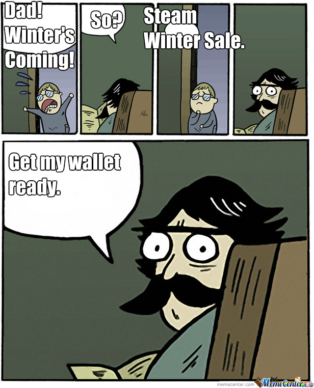

Hi, I'm Emily!
I'm a UX Designer focusing on interactions and an experience that tells a story, as well as helps the client meet their needs.
My previous work experiences in the science field also grants me the ability to research and tackle user problems from a different perspective: UX Design is a scientific process as much as it is also a design process.
UX Projects
